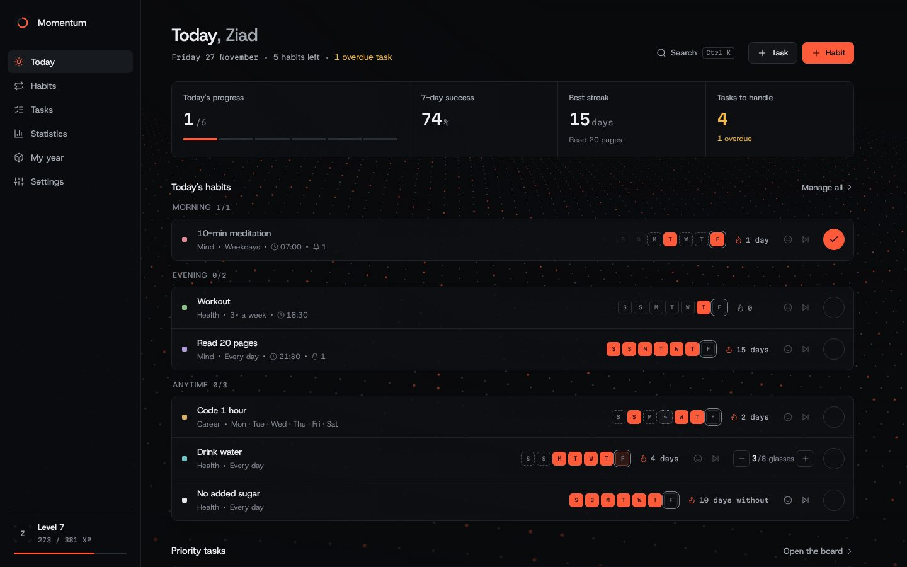
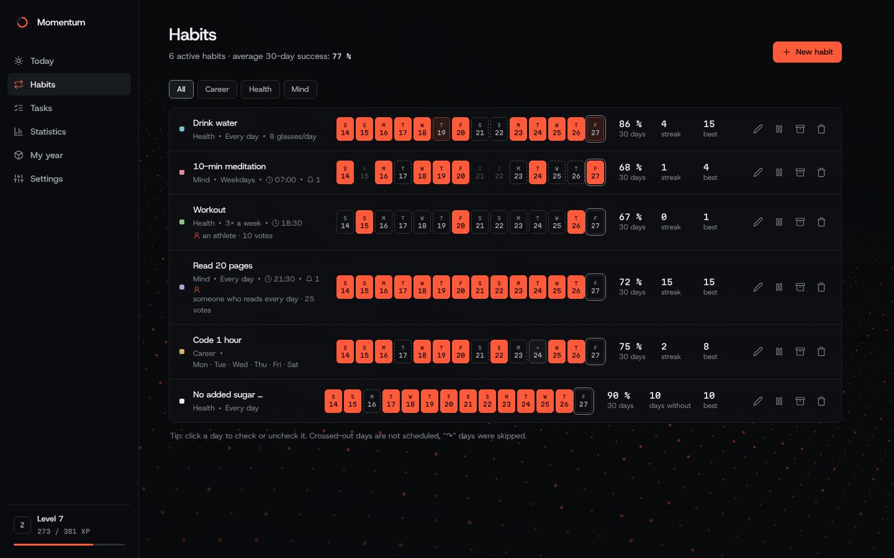
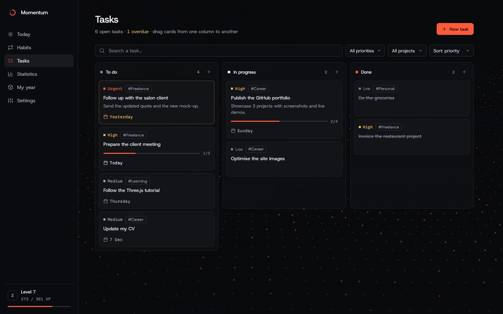
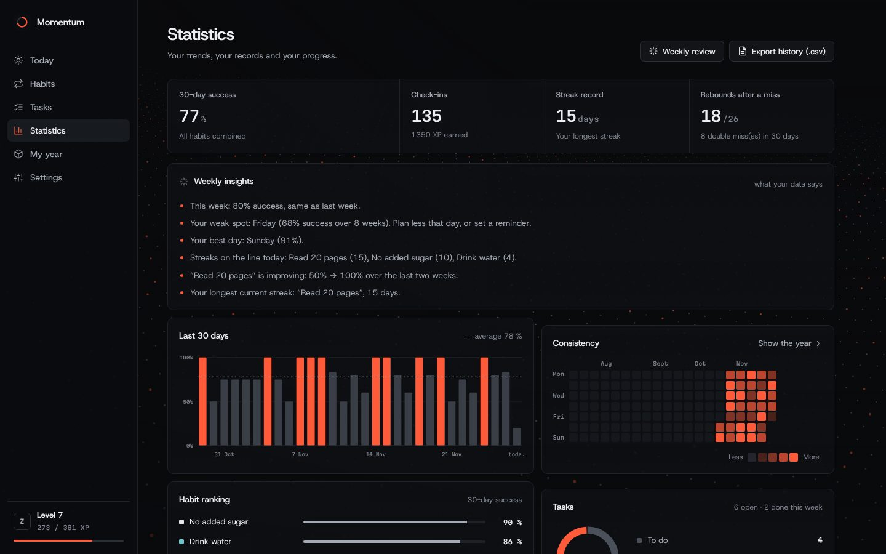

A year is built one day at a time.
A good resolution lasts three weeks, then fades because you can't see what you've already built. Momentum makes your progress visible: every block behind this text is a day, the higher it rises, the more you kept up.
371 days, 0 of them with at least one habit kept. Demo year.
Today is the missing block.
It sits at the very end of the year, still flat. Check off your three habits and watch it rise.
Today's progress0/3
A streak is something you can see.
The year coils into a spiral: each turn is a little over four weeks. Momentum counts the days you kept and never breaks your streak on days when nothing was planned.
Sample figures, taken from the demo data.
Three habits, three rings.
Seen from above, the year arranges itself into three circles, one per habit. Each has its own rhythm and goal.
- 1Done, or countedA checkbox, or a goal such as 8 glasses of water or 20 pages.
- 2At your own paceEvery day, specific days, or 3 times a week.
- 3With your tasksA To do, Doing, Done board with priorities and due dates.
And everything else, in the app.
What you see here is the real application, with its demo data. Your habits, tasks and statistics on one screen.




Your day on one screen: planned habits, what's left to do and urgent tasks.
What the others don't have.
Three ideas you won't find anywhere else, plus everything you expect from a real habit app, with no account and no subscription.
- My year in 3D, from your real dataThe year you see here lives inside the app, block by block. With a button to share it as an image.
- A Sunday review, written like a coachWhat worked, what got stuck, and one thing to change, applied in one click. Optional AI coach.
- Never twiceMissing a day is fine. The next day, a mini version gets you back on track. Every check-in is a vote for who you are becoming.
- Installable, offlineA home-screen icon, full screen, and everything works without a network.
- RemindersUp to three reminders per habit and an evening recap if some are left.
- Pause and vacationSkip a day, pause a habit or go on vacation: your streaks are protected.
- Your data stays with youNo account. Export, transfer code between devices, automatic backups, optional GitHub sync.
- Mood and timerA note and a mood per day; a timer that adds the minutes to the habit by itself.
- Light or dark, in 3 languagesLight, dark or automatic theme. English, español, français. Backup and transfer between devices.
Day 1 is today.
No account to create, no server: your data stays in your browser. Pick three habits and you are up and running in thirty seconds.
Designed and coded solo by Ziad El Alami, full-stack developer in Madrid: vanilla JavaScript, Three.js and hand-written shaders, no framework and no build step. The code is open.